About
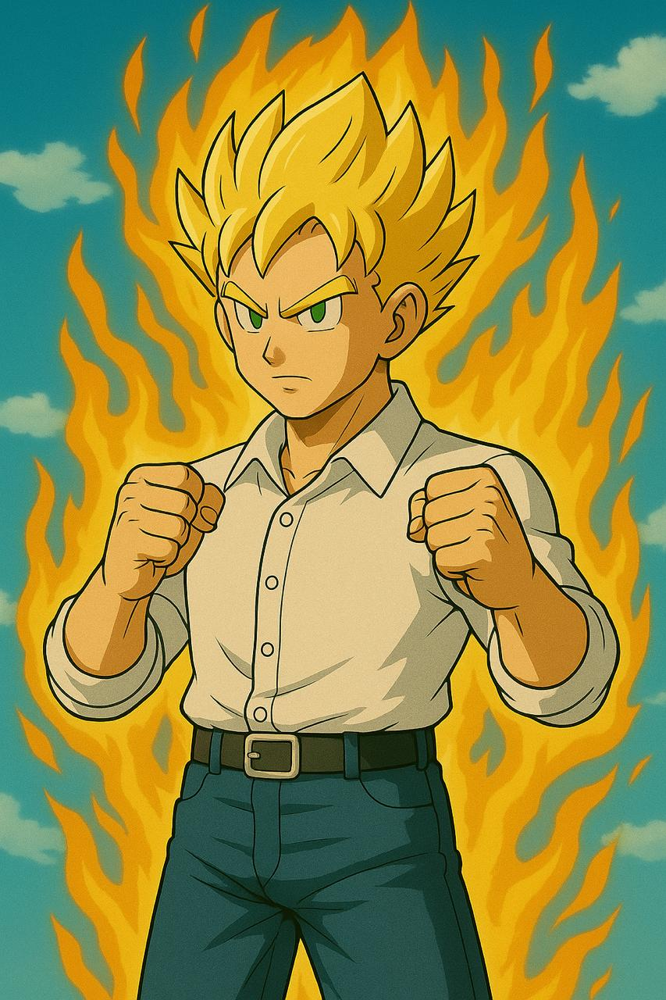
こんにちは。Keiです。インドネシアと日本で活動中。
●インドネシア人先端テックコミュニティ運営
。
●チンドオーナーのインドネシア中小企業での日系事業開発中。
取り組んでいること
- AI、サイバーセキュリティ、ブロックチェーンを深めたく、システムエンジニアリングを学習中。
- 武道と鍛錬を日々研究。日々最強の爺キャラになるため修行中。
- 子供と心を通わせ、楽しい思い出をたくさん作る。
History
- 野球少年〜高校球児
- 大学：格闘技開始。英国、豪州。
- ジャカルタへ
- 浅草人力車車夫
- 地方創生、着物、パン、動画メディア、営業代行
- リクルーター
- ITエンジニア採用に特化
- 中華系インドネシア企業
- 先端テックコミュニティ運営
What I love
先端テックから基礎ITまでの学習
IT業界に入ってからピンと来たのが「サイバーセキュリティ」であり、これを深めるため学習中。
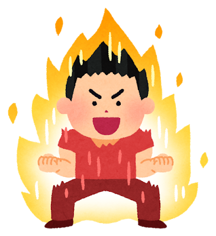

鍛錬
キックボクシング、ムエタイの立ち技をメインに、空手、柔道など武道・武術に挑戦。
鍛錬を試行錯誤。日々最強の爺キャラになるため修行中。
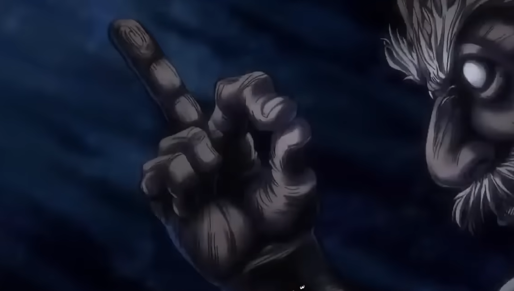
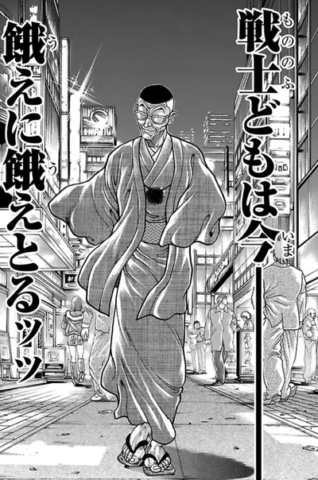
子供との時間
日々の子供との時間の中で、成長や変化、反応などを出来るだけ注意深く観察して、一緒にいろんなことに挑戦していく。
そして子供から学びながら、かけがえのない思い出をたくさん作る。
小説
歴史小説に手が伸びる。歴史の偉人たちの男らしい生き様に感動と憧れを感じる。
彼らのようにダイナミックに、かつシンプルに生きていきたいと思う。
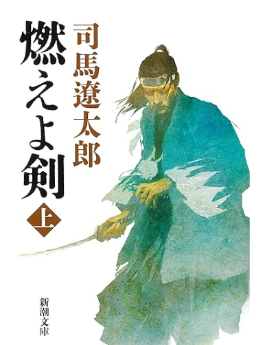
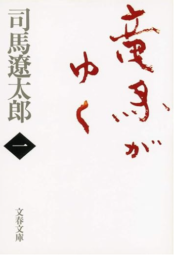
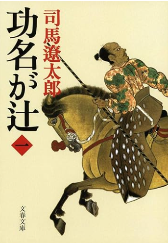
紙たばことシガー
男の永遠のいきりアイテム。
地球滅亡の前は紙たばこを吸って逝きたい。
ショートピースとジャルムスーパーが好き。
コイーバとコーヒーでチルしたい。
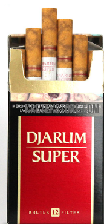
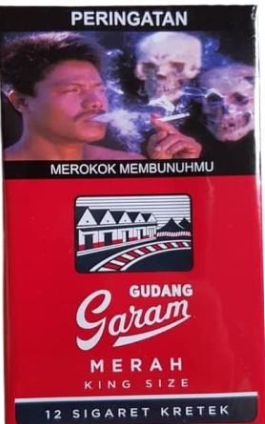
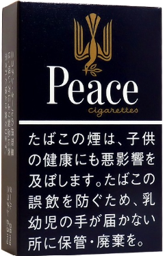
旅行
行った国：
香港、台湾、韓国、フィリピン、インドネシア、タイ、マレーシア、シンガポール、豪州、英国、仏国、ベルギー、モナコ、ドイツ、ロシア
行きたい国：
-
イタリア：スーツ着てエスプレッソ飲んで、ワイン、パスタ、ピザなどなど
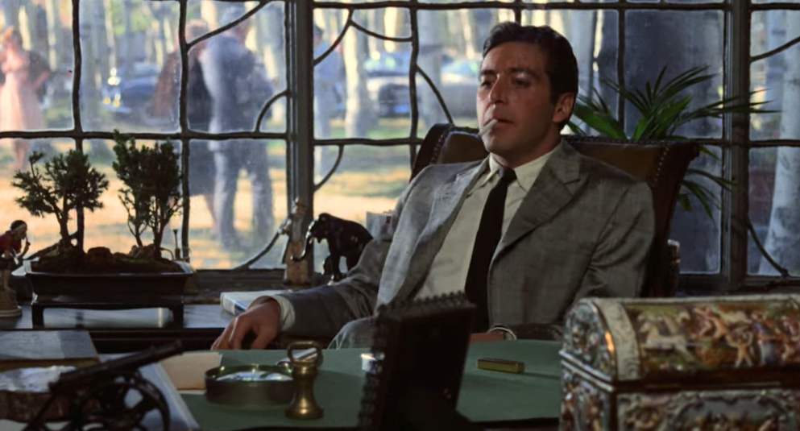
- スペイン：バルでタパスとシェリー酒を楽しみたい。
-
キューバ：コイーバとエスプレッソでチルしたい。
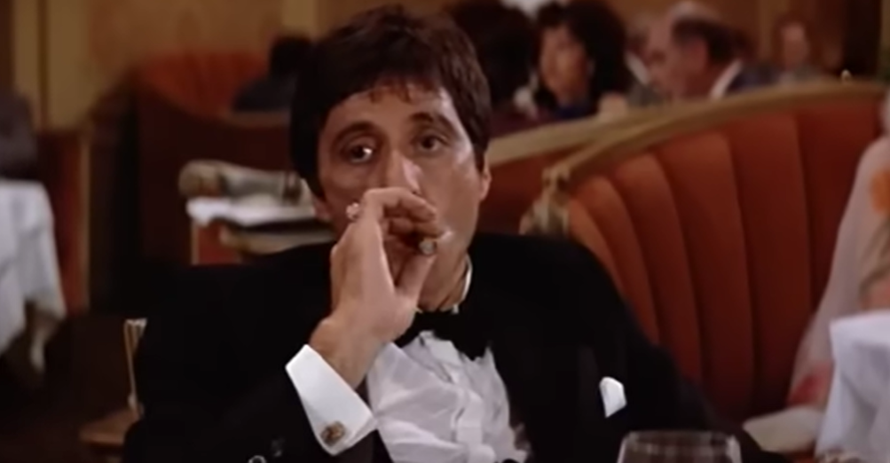
- インド：カレーとチャイをこれでもかってくらい楽しみたい。
和・日本
和装、伝統芸能、伝統工芸、和食、日本酒、寺院、歴史、旅館などジャパニーズスタイルが好き。
古代日本に興味がある。日本人のルーツ、蝦夷、出雲、熊襲、隼人……どんな人たちだったのか。ロマン。
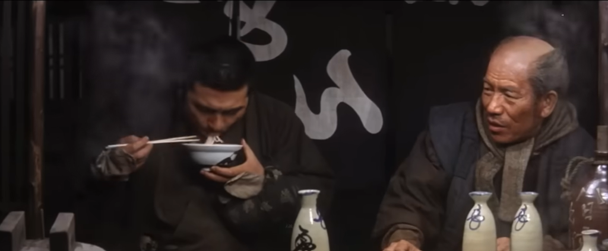
Contact
Email: